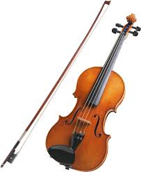
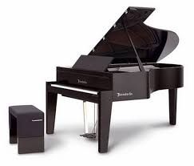
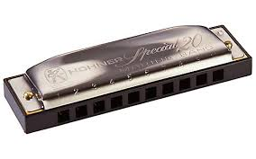
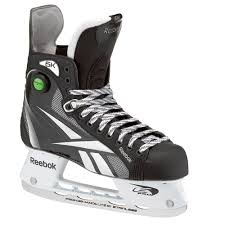
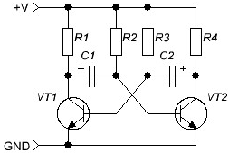

Мои увлечения
Итак, если вы внимательно читали прошлый раздел этого сайта, то знаете, что я умею играть на нескольких музыкальных инструментах (гитара, скрипка, пианино, немного на губной гармонике).
Люблю слушать музыку и кататься на коньках, в свободное время могу засесть с паяльником за сборкой каких-нибудь самых простых радиолюбительских схем.




